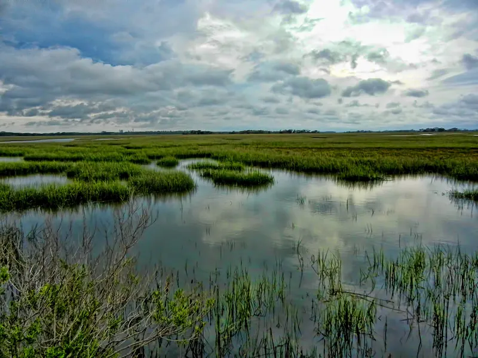
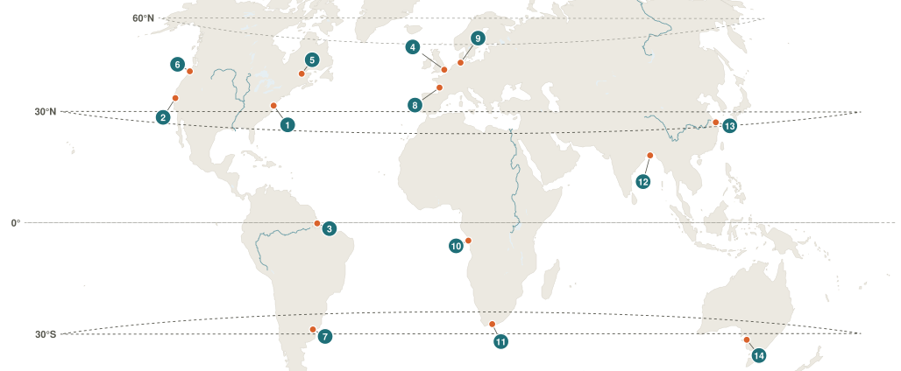
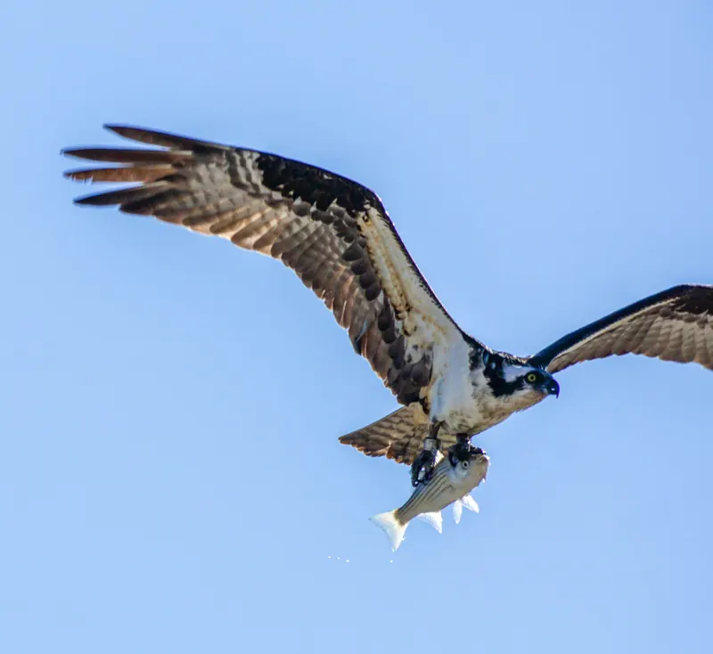

Smooth cordgrass
Glands in the leaves push out extra salt, which dries as white crystals. Hollow tubes carry oxygen down to roots buried in oxygen-poor mud, and the roots hold the marsh together against the tides.

Aquatic life zone
An estuary is a partly enclosed coastal area where a freshwater river meets the salty ocean. The mix of fresh and salt water is called brackish, and the tides keep pushing it back and forth. Estuaries are some of the most productive ecosystems on Earth and act as nurseries for many fish and shellfish.
Estuaries follow the climate of the coast they sit on, and the shallow water warms and cools faster than the open ocean. In Chesapeake Bay, the water goes from near freezing in winter to about 28 °C in summer. Rain and snowmelt in the river's watershed set how much fresh water reaches the estuary: spring floods freshen it, and droughts let the salt creep upstream. Salinity runs from nearly fresh at the river end to about the same as the ocean at the mouth, and it changes with every tide. This constant swing is the biggest challenge for life here.
The bottom is soft mud and silt that the river carries in and drops where the current slows. It is rich in nutrients and in decaying plant matter, but just below the surface it has almost no oxygen. That is why the mud is dark and can smell like rotten eggs.
Salt marshes build up a thick, wet peat of old roots and stems. Sandier sediment is found closer to the ocean.
Estuaries form wherever a river reaches the sea, so they exist on every continent except Antarctica and at nearly every latitude. In cold and temperate regions they are fringed by salt marsh. In the tropics, mostly between 25° N and 25° S, mangrove forests take their place.

Estuary life must handle changing salt levels, muddy low-oxygen sediment and the rise and fall of the tides.
Glands in the leaves push out extra salt, which dries as white crystals. Hollow tubes carry oxygen down to roots buried in oxygen-poor mud, and the roots hold the marsh together against the tides.
It digs burrows in the mud to escape heat, predators and high tide. Males wave one oversized claw to attract mates and scare off rivals.
It tolerates a wide range of salinity and swims with flattened, paddle-shaped back legs. Females move to saltier water near the mouth to release their eggs.
Adults live in the ocean but swim up into estuaries and rivers to spawn in fresh water. Their gills and kidneys adjust the salt balance of the body as salinity changes.

It dives feet first for fish. A reversible outer toe and spiny foot pads grip slippery prey, and the nostrils can close during the plunge.
It stays fixed to hard surfaces and filters plankton from the water, which cleans the estuary. When salinity drops, it clamps its shell shut and waits.

Problem
Fertilizer, sewage and animal waste wash into rivers and feed huge algae blooms. When the algae die and rot, they use up the oxygen, which creates dead zones and fish kills.
Solutions
Use less fertilizer, plant buffer strips of vegetation along streams, upgrade sewage treatment and restore wetlands and oyster reefs that filter the water.
Problem
Sea level rise pushes salt water into freshwater marshes and forests. The trees die and leave standing "ghost forests", and marshes drown if they cannot move inland.
Solutions
Cut greenhouse gas emissions and protect open land behind marshes so they can move inland as seas rise.

Problem
Seawalls and filled wetlands destroy habitat, and overfishing of oysters and fish has crashed some populations.
Solutions
Build living shorelines of rock and marsh grass instead of seawalls, restore oyster reefs and set catch limits.